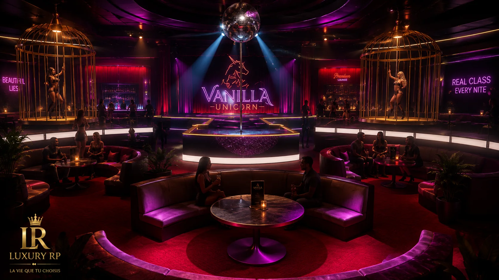

Présentation
Unicorn
Le Vanilla Unicorn est un lieu de nuit, d’ambiance et de rencontres RP. Il doit devenir une scène récurrente pour les soirées, événements privés et recrutements nightlife.
Missions RP
Ce que l’on vient jouer ici.
Chaque entité est pensée comme un point de rendez-vous RP : interactions, responsabilités, progression et identité propre.
Activités principales
- Soirées
- Bar
- Shows
- Accueil VIP
Hiérarchie type
StaffBarmanManagerDirection
Les grades peuvent être ajustés selon l’organisation RP finale.
Galerie
Ambiance visuelle.
Visuels de référence pour présenter l’univers, le lieu et l’atmosphère de l’entité.


Recrutement
Envie de rejoindre Unicorn ?
Le recrutement se fait via Discord ou directement en ville selon les règles RP de Luxury RP.